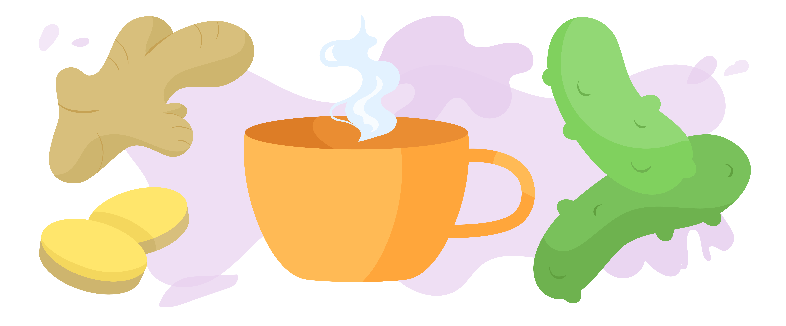

Kater Beschwerden
Schwinden & Übelkeit
Sofern dir nicht zu übel ist und du in der Lage bist, etwas zu essen, greif am besten zu etwas Sauer-Salzigem.
Ideal dafür geeignet sind fettreiche Fische wie Lachs, saure Gurken, Hühnerbrühe oder Salzstangen. Enthaltene Omega-3-Fettsäuren und das Salz bringen deinen Elektrolyte-Haushalt und damit deinen Kreislauf wieder in Schwung und fördern den Alkoholabbau.
Falls dir zu übel ist, hilft dir frisch aufgebrühter Ingwertee, der deinen Magen erst einmal beruhigt.
Kopfschmerzen
Dein Körper ist durch die erhöhte Alkoholzufuhr dehydriert. Daher ist ein Tipp altbewährt und liegt quasi auf der Hand: Du solltest am Tag danach viel Wasser trinken.
Du kannst dir als Richtwert dafür den durchschnittlichen Wasserbedarf eines erwachsenen Menschen nehmen.
Du solltest normalerweise –unabhängig von deinem Körpergewicht – 2-3 Liter Wasser am Tag trinken. Demnach ist das auch im Fall eines Katers eine guter Anhaltspunkt.
Aber Achtung! 5 Liter Wasser oder mehr sind gesundheitsschädigend.